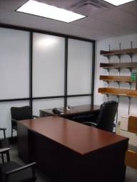
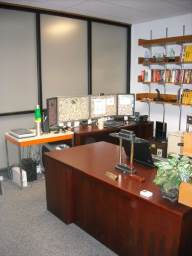

I served as Interim Chair of the Department of Computer Science & Engineering
at the University of North Texas
for two years from September 1, 2009 to August 31, 2011.
I was initially appointed for a single year, but when the external Chair Search failed in 2010 I was
invited to serve for a second year until (thankfully) my replacement was found.
The Chair is the chief executive officer of the department, which at the time
had 20 tenure track faculty, 6 lecturers, 1 Adjunct, 3 Teaching Fellows,
10 Teaching Assistants, 3.5 Administrative Assistants, and 2.25 technicians.
The Department of Computer Science and Engineering offered undergraduate degrees in Computer Science, Computer Engineering,
and Information Technology; Master's degrees in Computer Science and Computer Engineering; and a PhD in Computer Science and Engineering.
It had 374 undergraduate majors, 105 pre-majors, 139 Master's students and 56 PhD students.
The University of North Texas described itself at the time as a "student-centered,
public, research university",
offered 97 Bachelor's, 101 Master's and 48 Doctoral degree programs, and had
approximately 30,000 undergraduate students, 6,000 Master's students, and 1,600 Doctoral students.
Assembled new administrative team:
- Graduate Coordinator
- Undergraduate Coordinator
- Associate Chair
Served as signatory authority for all department accounts:
-
Academic Year 2009-2010: $2.96M
-
Academic Year 2010-2011: $3.15M
Established new faculty-friendly procedures aimed at increasing faculty productivity:
- Opened communication lines and used humor to create a sense of teamwork and camaraderie
- Reversed previous chair's policy of not permitting faculty to block windows in offices
- Reversed previous chair's policy of requiring advance submission of funding proposals for chair signature
- Used large fonts in faculty meeting PowerPoint slides as repeatedly requested by several faculty in past years but denied by previous chair
- Proactively communicated with faculty by going to their offices instead of the previous chair's requirement that faculty come to his office
- Directed and worked with the Associate Chair to ensure that class scheduling and TA assignments are done early instead of at the last minute as done by the previous Chair and Associate Chair
ABET Review of Computer Science program:
- Supervised and facilitated ABET site visit
- Composed and submitted 7-day response to Program Audit Form submitted by the Program Accreditation Team at the exit interview. This response led to a change from 3 concerns, 3 weaknesses, and a deficiency in the Program Audit Form to 2 concerns and 3 weaknesses in the Draft Statement
- Worked closely with the Chair of the Department of Mathematics to obtain a letter of support establishing procedures for ensuring compliance with ABET requirements for the Discrete Math course to alleviate the deficiency noted in the Program Audit Form
- Composed and submitted a 22-page 30-day response to Program Audit Form.
- Composed and submitted a 206-page Final Response to Program Audit Form.
- Program reaccredited to 2016.
Review of policies and procedures:
- Established an ad hoc committee to review the department's charter
- After failure of the Charter Committee, I rewrote the Charter myself, with recommendations from the Associate Chair, the Executive Committee, and the Chairs of the Undergraduate and Graduate Committees.
- Gave committees a list of charges that call for review and change, to all committees (3 charges), PAC (3 charges), Graduate Committee (3 charges), Undergraduate Committee (4 charges), Charter Committee (6 charges)
- Obtained faculty approval to change Workload document to include service to the profession under the Service Category (was previously included under the Research category)
Tenure and Promotion:
- Wrote letter of support and supervised the creation of the tenure packet for one junior faculty member, who was subsequently granted promotion and tenure.
- Supported the promotion to Full Professor of two faculty members. Wrote a 7 page support letter for each of them In opposition to the department PAC's recommendation to deny their promotion cases. Subsequently both candidates were promoted.
- Did not support the promotion to Full Professor of third faculty member, concurring with the department's PAC. Subsequently the College of Engineering PAC and the Dean concurred. Promotion was denied.
Hiring and Firing:
- Established ad hoc Faculty Search and Chair Search committees
- Welcomed new Assistant Professor, mentored him, and nominated him for several awards
- Worked with Associate Chair on welcoming and integrating new cluster hire into the department
- Worked with committees and the Department of Biology, Mathematics, Electrical Engineering, Studio Art, and Music on new cluster searches in Bioinformatics and Engineering/Art
- Established ad hoc Faculty Search and Chair Search committees.
- Hired new Assistant Professor, mentored him, and made sure that he has all he needs for his research. Wrote a letter in support of his Permanent Residency.
- Worked with committees on Phase 2 cluster searches in Computational Chemistry, Computational Life Sciences, Biosensors, and Knowledge Discovery.
- Chaired the Faculty Search Committee in its search for a new lecturer in theoretical computer science address the weakness in theory pointed out in the ABET Program Audit. Candidates were phone interviewed, then allowed to give a 1-hour presentation consisting of a lecture from a theory class and their comments on it.
- Hired a new technician to replace previous one who accepted a position as Electronics Engineer at a CA company.
- Terminated the contract of a lecturer effective Summer 2011 for financial exigencies.
- Arranged one-year term for a lecturer transferred from UNT Dallas.
- Hired as new lecturer in theoretical computer science.
Curriculum issues:
- Negotiated with the Chair of the Department of Philosophy to obtain preliminary agreement for them to take over the teaching of the Engineering Ethics class from our department
- Directed the Undergraduate Committee to review the undergraduate curriculum, particularly with regard to choice of introductory programming language, theory requirement, and tracks and streams
- Worked with the Undergraduate Committee to review the undergraduate curriculum in Computer Science and put in place a 2-course theory sequence that will address the weakness in theory pointed out in the ABET Program Audit.
- Worked with the Graduate Committee reviewed the PhD curriculum, with regard to admission and retention requirements, and required credits.
- Worked with the Graduate Committee to draft a departmental graduate student recruiting plan.
Faculty Evaluations:
- Performed the 2007-2009 Merit Evaluations of 23 tenure-track faculty and lecturers in 2010.
- Wrote the 2007-2009 Probationary Faculty Evaluations for 4 junior faculty.
- Performed the 2008-2010 Merit Evaluations of 23 tenure-track faculty and lecturers in 2011.
- Wrote the 2008-2010 Probationary Faculty Evaluations for 4 junior faculty.
Outreach:
- Maintained a Facebook presence in which I post department news and interesting CS and education related articles daily. I have 398 Facebook friends including students, alumni, industry contacts, faculty and administrators at other universities.
- Supervised and contributed to department's online newsletters for alumni and students.
- Arranged and chaired meetings of department's Advisory Board each long semester.
- Met informally with alumni (including one UNT CS alumnus who is now a successful CEO and millionaire) over lunch and dinner on a several occasions.
- Visited Baylor University to give a colloquium on game programming to attract PhD students to our program. Baylor CS has a nontraditional PhD program with a university in Eastern Europe.
- Met informally with alumni (including one UNT CS alumnus who is now a successful CEO and millionaire) over lunch and dinner on a several occasions
- Managed the updating of department's brochures for the undergraduate and graduate programs
Staff:
- Managed staff.
- Performed annual evaluations for 3 office staff.
- Applied for promotion of two office staff members.
- Issued Verbal Warning to office staff member for "Failure to maintain satisfactory working relations with employees, students or the public". This involved my working with HR to learn and apply proper procedure when reprimanding staff members.
Miscellaneous issues:
- Made decisions on class schedules, faculty teaching assignments, and small class reports under advice from the Associate Chair
- Chaired and conducted monthly departmental faculty meetings and EC meetings
- Attended weekly College of Engineering EC and DAC meetings
- Attended Provost's monthly Chair Academy meetings
- Attended administrative training sessions as directed
- Heard appeal of faculty member against his Spring 2010 teaching assignment, and responded to requests from his College level grievance committee
- Reassigned lab space of underperforming faculty.
- Ensured department-wide compliance with HB 2504.
- Complied with an Internal Audit Fee review.
- Attended Dean's Retreat for the College of Engineering in 2010 and 2011.
- Prepared for the Dean a prioritized list of potential places that the CSE budget can be cut, with justification and consequences for each choice.
- Prepared for the Dean a review of salary compression among CSE faculty.